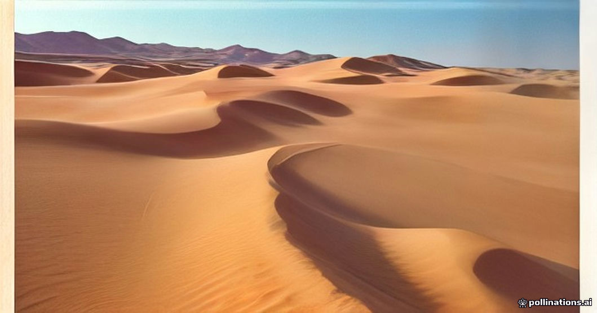

Most travelers pack either too many shoes or the wrong kind entirely for the desert trip. The transition from smooth medina tile to jagged limestone riverbeds in the Todra Gorge and loose silica at Erg Chebbi creates conflicting demands. Heavy hiking boots take up half a duffel bag and make eight-hour vehicle transfers miserable, while flimsy flip-flops turn into friction ovens the moment fine quartz sand gets trapped beneath the straps.
You do not need specialized desert running gaiters or expensive alpine footwear. A functioning footwear strategy for the desert route balances three specific environments: long sitting periods in a vehicle, uneven rock and clay around kasbahs and gorges, and dry, shifting sand dunes. Packing three well-chosen pairs solves every terrain challenge on the route without overstuffing your luggage.
The Long Drive: Slip-On Comfort and Breathability
The drive from Marrakesh or Fes to the Sahara requires between seven and ten hours on the road each day, broken up by brief roadside viewpoints, coffee breaks, and fuel stations. During these long stretches in a 4x4 or minivan, your feet will swell slightly from cabin heat and prolonged sitting. Lacing into rigid footwear at 08:00 and keeping it on until evening is an easy way to end the day with sore, damp feet.
Your primary transit footwear should be easy to slip on and off without untying laces. Breathable knit sneakers, lightweight slip-ons, or comfortable lifestyle sandals allow you to slide your footwear off while cruising through the High Atlas, yet let you step outside quickly at gas station restrooms where floors are often wet and uninviting. Avoid heavy leather shoes during transit days.
Gorges and Kasbahs: Traction Over Stiff Ankle Support
Between the Atlas Mountains and the dunes, the route stops at historical sites and river canyons. Exploring the earthen stairs of Ait Ben Haddou, walking the gravel paths of the Dades Valley, or strolling along the shallow riverbed of the Todra Gorge involves hard, abrasive surfaces. Loose shale, polished river rock, and sun-baked mud brick provide little natural grip.
A low-cut trail runner or walking shoe with an aggressive rubber lug sole is ideal here. You do not need high-top ankle support unless you have pre-existing joint instability; stiff boot collars simply trap heat. What you need is torsional rigidity underfoot so jagged limestone does not bruise your arches, combined with sticky rubber that adheres to smooth, dust-covered stone.
The Sand Dunes: The Trade-Off Between Sand Entry and Heat
Walking on the Erg Chebbi dunes presents a practical trade-off: keeping sand out versus letting it escape. Mesh sneakers breathe well, but fine Sahara sand sifts directly through the weave within five paces, pooling beneath your insoles. High-top combat boots keep sand out slightly longer, but once sand enters through the tongue or top cuff, emptying it requires completely unlacing the boot while balancing on an unstable slope.
For sunrise and sunset climbs when the sand is cool, going completely barefoot is often the easiest option, giving your toes natural traction on steep inclines. However, if you are hiking mid-morning or late afternoon, sand surface temperatures can exceed 50°C. In those conditions, wear tightly woven trail shoes paired with smooth Merino wool socks. Sand still works its way in around your ankles, but the wool minimizes blister-causing friction until you reach camp.
- Strap-on sandals (Tevas/Chacos): Convenient, but sand collects under the footbed and acts like coarse sandpaper against wet or sweaty skin.
- Standard running shoes with open mesh: They fill with silt rapidly, making your feet feel heavy and gritty within minutes.
- Barefoot: Excellent for morning dune walks; dangerous between 11:00 and 16:30 due to radiant ground heat.
Camp Evenings: Transitioning to Static Warmth
Once you arrive at your desert camp, the terrain changes from shifting dunes to hard-packed sand, woven wool rugs, and tent floorboards. At night, desert temperatures drop sharply, particularly between November and March when overnight lows regularly hit single digits Celsius.
A pair of warm socks combined with simple slides, clogs, or comfortable camp shoes works best for moving between your sleeping tent and the dining tent. You will want something you can kick off instantly at the entrance of carpeted spaces without bending down to untie cold laces in the dark.
| Setting / Terrain | Best Shoe Choice | Primary Benefit | What to Avoid |
|---|---|---|---|
| Transit Days (Vehicle) | Slip-on sneakers or slides | Easy to remove; accommodates swelling | Heavy high-top hiking boots |
| Kasbahs & Gorges | Low-cut trail runners | Traction on slick rock and clay | Smooth-soled fashion sneakers or flip-flops |
| Dune Climbs (Cool Sand) | Barefoot or trail shoes + wool socks | Natural grip or enclosed blister defense | Open strap sandals (sand acts like sandpaper) |
| Midday Sand (Hot) | Enclosed shoes with solid uppers | Thermal barrier against burning ground | Bare feet or thin rubber flip-flops |
| Desert Camp Interior | Slip-on slides or wool-lined clogs | Fast removal at carpet thresholds | Lace-up shoes requiring seated tying |

Illustration, not a photograph — for the real thing, you'll have to stand on the ridge yourself.
Quick answers
A few follow-up questions travelers ask about this.
Do I need desert gaiters for climbing the Erg Chebbi dunes?
No. Sand gaiters with Velcro shoe attachments are designed for multi-day endurance events like the Marathon des Sables. For a standard desert tour, you will only spend an hour or two climbing dunes at sunset. Sand will get into your shoes; simply dump them out at the base before entering your tent.
Can I wear flip-flops while riding a camel?
We recommend against loose flip-flops on the camel trek. When the camel stands up or kneels, its sharp lurching motion can cause loose sandals to fly off into the sand. Furthermore, the stirrup irons can rub against bare skin. Secure strap sandals or closed sneakers are far safer.
Are heavy waterproof hiking boots useful on this route?
Generally, no. Waterproof membranes like Gore-Tex prevent water from entering, but they also trap sweat and heat in warm, arid environments. Unless you are visiting the High Atlas in midwinter during heavy snow, lightweight, non-waterproof trail shoes are much cooler and dry faster.
Planning your own route?
Tell us your dates and what matters to you — we'll answer with a straight recommendation, not a brochure.
Send an inquiry See the itineraries